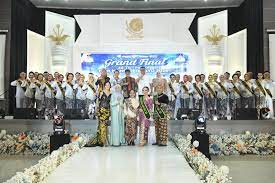

Haidar News - Langkah awal pencarian Duta Pariwisata Kabupaten Indramayu resmi dimulai. Pemerintah Kabupaten Indramayu melalui Dinas Pariwisata, Pemuda dan Olahraga (Dispara) sukses menggelar acara Pinton Anggon (Sashing Ceremony) Paguyuban Nok Nang Dermayu 2026 pada Minggu (2/8/2026).
Acara tahunan yang menjadi kebanggaan masyarakat Indramayu ini mengusung tema "Semarak Ing Budi, Sampurna Ing Laku".
Sebanyak 15 finalis terbaik telah lolos ke babak puncak ini setelah melewati serangkaian seleksi ketat di babak penyisihan. Para peserta tampil dengan kemampuan terbaik, tidak hanya dalam penampilan fisik dan busana, tetapi juga penguasaan budaya, tata krama, serta wawasan mengenai kearifan lokal Dermayu.
Hadir memeriahkan sekaligus membuka acara, Kepala Dinas Pemuda dan Olahraga (Kadis Pora) Kabupaten Indramayu, Dr. Ahhmad Sadili M.e.d . Dalam kesempatannya, ia menyampaikan apresiasi yang tinggi kepada seluruh panitia, peserta, dan pihak yang telah berkontribusi hingga terselenggaranya acara ini dengan lancar.
"Pasanggiri Nok Nang Dermayu bukan sekadar ajang pemilihan putra-putri terbaik, melainkan wadah pelestarian budaya dan karakter generasi muda Indramayu. Tema yang diusulkan kali ini sangat relevan — Semarak Ing Budi, Sampurna Ing Laku — menegaskan bahwa kecantikan dan ketampanan harus beriringan dengan akhlak dan perilaku yang baik," ujar H. Sadeli.
Sementara itu, Ketua Panitia Pelaksana, Muhamad,Afgan Muhbarok menjelaskan bahwa persiapan telah dilakukan secara matang sejak berbulan-bulan lalu demi menjaga kualitas dan kemeriahan acara.
"Kami berharap melalui kegiatan ini lahir putra-putri Dermayu yang tidak hanya unggul dalam penampilan, tetapi juga menjadi duta budaya yang mampu menginspirasi dan berkontribusi bagi kemajuan Kabupaten Indramayu. Terima kasih kepada semua pihak yang telah mendukung pelaksanaan acara ini," ungkap Ahmad Mubarok
Suasana di Aula Gedung Unwir tampak penuh semangat dan haru, dihadiri oleh para orang tua, pendukung, tokoh masyarakat, serta tamu undangan lainnya yang antusias menyaksikan perhelatan bergengsi ini. Pasanggiri Nok Nang Dermayu ke-39 ini diharapkan semakin memperkokoh jati diri budaya masyarakat Indramayu di tengah perubahan zaman
Paguyuban Nok Nang Dermayu mengajak para pemuda-pemudi berbakat untuk tidak ragu menunjukkan potensi mereka dan bergabung dalam gerakan memajukan Indramayu melalui jalan budaya dan pariwisata.
Video Seputar Pasanggiri Nok Nang Dermayu 2025
Top 30 Finalist Nok/Nang Dermayu 2025

- Saparudin Yahya, SMKN 2 Indramayu
- Hijriyana, SMKN 2 Indramayu
- Andien, SMAN 1 Kandanghaur
- Fahri, Universitas Wiralodra
- April, SMAN 1 Indramayu
- Aldo, SMAN 1 Indramayu
- Dewi, Poltekpar NHI Bandung
- Wildan, SMAN 2 Indramayu
- Twin, SMAN 1 Sukagumiwang
- Danar Hadi, SMAN 2 Indramayu
- Lita, SMAN 1 Kandanghaur
- Freedy, SMAN 2 Indramayu
- Lindy, Universitas Wiralodra
- Erul, SMAN 1 Indramayu
- Aura, Universitas Pendidikan Indonesia
- Raskita, Universitas Wiralodra
- Sri, Institut Pangeran Dharma Kusuma
- Topan, MAN 1 Indramayu
- Nanda, Unjani Yogyakarta
- Adzis, Politeknik Negeri Indramayu
- Aina, Politeknik Negeri Indramayu
- Kevin, SMAN 2 Indramayu
- Bunga, SMAN 1 Sindang
- Arul, UIN Sunan Gunung Djati Bandung
- Wahid, Universitas Katolik Soegijapranata
- Tia, SMAN 1 Sindang
- Irgi, Politeknik Negeri Indramayu
- Andini, STIKES Indramayu
- Niko, SMAN 1 Krangkeng
- Dadan, Universitas Darul Ma'arif
Daftar Juara Nok & Nang Dermayu
| Nama | Umur | Unjuk Bakat | Kategori Juara | Asal Sekolah |
|---|---|---|---|---|
| Wildan Naser Albalushi | 17 | Nyanyi | Meduluran | SMAN 2 Indramayu |
| Tia Ainun | 18 | Tari | Harapan 4 | SMAN 1 Indramayu |
| Muhammad Ali Topan | 17 | Berpuisi | Wakil | MAN 1 Indramayu |
| Wildannasr Albalusy | 17 | Nyanyi | Juara 1 | SMAN 2 Indramayu |
| Nok & Nang Dermayu 2025 | ||||